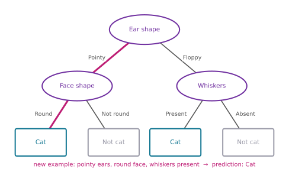
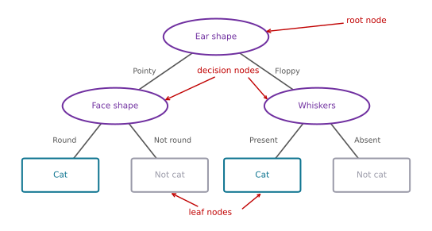
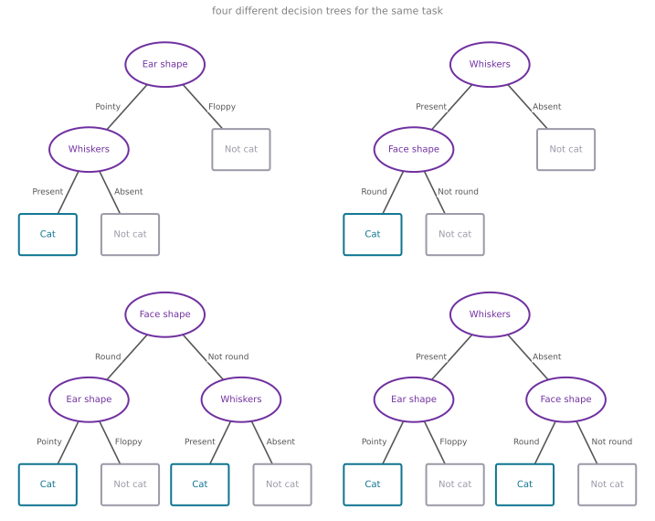
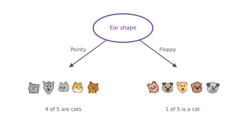
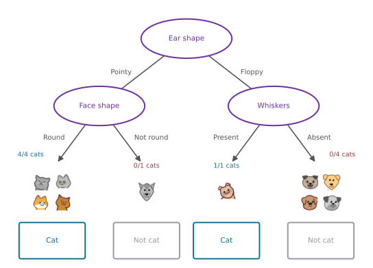
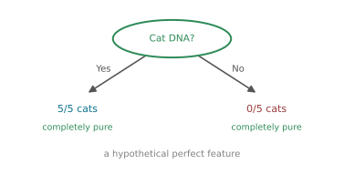
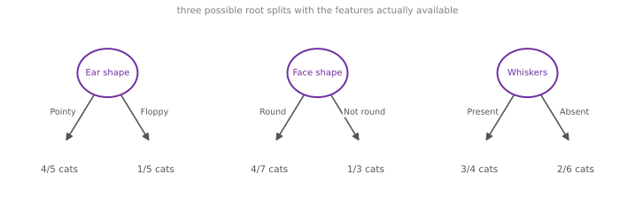
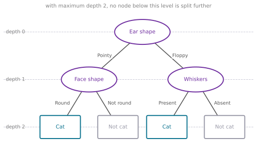

Decision Trees
machine-learning
neural-networks
What a decision tree is, nodes and predictions, many possible trees, the step-by-step building process, and the criteria for when to stop splitting.
Welcome to the final part of this course section. One of the learning algorithms that is very powerful, widely used in many applications, and also used by many people to win machine learning competitions is decision trees and tree ensembles. Despite all their successes, decision trees somehow have not received that much attention in academia, so you may not hear about them nearly as much as neural networks, but they are a tool well worth having in your toolbox.
Cat Classification Example
The running example for these pages is cat classification. You are running a cat adoption center, and given a few features, you want to train a classifier that quickly tells you whether an animal is a cat or not.
Here are 10 training examples. Associated with each example are features describing the animal’s ear shape, face shape, and whether it has whiskers, followed by the ground-truth label to predict, is this animal a cat? The first example has pointy ears, a round face, whiskers present, and it is a cat. The second has floppy ears, a face that is not round, whiskers present, and yes, that is a cat too. The dataset has five cats and five dogs in it.
| Animal | # | Ear shape | Face shape | Whiskers | Cat? |
|---|---|---|---|---|---|
 |
1 | Pointy | Round | Present | 1 |
| 2 | Floppy | Not round | Present | 1 | |
 |
3 | Floppy | Round | Absent | 0 |
| 4 | Pointy | Not round | Present | 0 | |
 |
5 | Pointy | Round | Present | 1 |
| 6 | Pointy | Round | Absent | 1 | |
| 7 | Floppy | Not round | Absent | 0 | |
 |
8 | Pointy | Round | Absent | 1 |
| 9 | Floppy | Round | Absent | 0 | |
 |
10 | Floppy | Round | Absent | 0 |
The input features \(X\) are the three middle columns, and the target output \(y\) is the final column. Two things are worth noticing about this dataset.
- The features take on categorical values, meaning just a few discrete options. Ear shape is either pointy or floppy, face shape is either round or not round, and whiskers are either present or absent. Later sections cover features that take on more than two possible values, as well as continuous-valued features.
- This is a binary classification task, because the labels are also just 1 or 0.
Review Questions
1. In the cat adoption dataset, what are \(X\) and \(y\), and what makes the features “categorical”?
TipAnswer
\(X\) consists of the three feature columns (ear shape, face shape, whiskers) and \(y\) is the final column, 1 for cat and 0 for not cat. The features are categorical because each takes on only a few discrete values, such as pointy or floppy, rather than numbers from a continuous range.
1. Why is this a binary classification problem?
TipAnswer
Because the target label \(y\) takes on exactly two values, 1 (cat) or 0 (not cat). The model’s job is to sort each animal into one of two classes.
Decision Tree Model
Here is an example of a model you might get after training a decision tree learning algorithm on the dataset above. The model output by the learning algorithm looks like a tree, in the computer science sense of the word. If the picture looks nothing like the biological trees outside, do not worry, the terminology will make sense in a moment.
Suppose a new test example arrives, an animal with pointy ears, a round face, and whiskers present. The model classifies it by starting at the topmost node of the tree and looking at the feature written inside, ear shape. Based on this example’s value of ear shape, the model goes left or right. The value here is pointy, so it goes down the left branch and arrives at the next oval node. It then looks at the face shape of the example, which is round, and follows that arrow down. The model arrives at the bottom and makes the inference that this is a cat, the highlighted path in the figure.
Terminology
Every oval or rectangle in the picture is called a node of the tree, and each kind of node has a name.

- The topmost node is the root node.
- All of the oval nodes, excluding the boxes at the bottom, are decision nodes. They look at a particular feature and, based on its value, cause you to decide whether to go left or right down the tree.
- The rectangular boxes at the bottom are leaf nodes, and they make a prediction.
If you have not seen a computer scientist’s definition of a tree before, it may seem non-intuitive that the root is at the top and the leaves are at the bottom. One way to think about it is that the picture is more akin to an indoor hanging plant, roots up top, leaves falling down toward the bottom.
Review Questions
1. Based on the decision tree above, if an animal has floppy ears, a round face shape, and has whiskers, does the model predict that it is a cat or not a cat?
Cat
Not a cat
TipAnswer
a. Cat. Start at the root and look at ear shape. Floppy sends the example down the right branch to the whiskers node, and whiskers are present, so the model follows the left arrow to the leaf that predicts cat. The round face shape is a distractor here. Face shape sits on the pointy side of the tree, so it is never even looked at on this path.
1. Match each term to its description: (a) root node, (b) decision node, (c) leaf node. Descriptions: (i) looks at a feature and sends the example left or right, (ii) makes the final prediction, (iii) the topmost node where every example starts.
TipAnswer
(a)-(iii), (b)-(i), (c)-(ii). The root node is the topmost node where classification starts (it is also itself a decision node), decision nodes route the example left or right based on a feature value, and leaf nodes output the prediction.
1. Why does the model only examine some of the features for a given example, rather than all three?
TipAnswer
Because a prediction follows a single path from the root to one leaf, and only the features on that path get examined. An animal with pointy ears never reaches the whiskers node in this tree, so its whiskers value never influences the prediction.
Many Possible Trees
The tree above is one specific decision tree model. Here are a few others for the same cat-versus-not-cat task. In the first alternative, to make a classification you would again start at the root node, and depending on the ear shape you go left or right; if the ear shape is pointy, you then look at the whiskers feature, and depending on whether whiskers are present or absent, you classify cat versus not cat.

Among these different decision trees, some will do better and some will do worse on the training set, or on the cross-validation and test sets. The job of the decision tree learning algorithm is, out of all possible decision trees, to try to pick one that does well on the training set and ideally also generalizes well to new data, such as the cross-validation and test sets.
There seem to be lots of different decision trees one could build for a given application. How do you get an algorithm to learn a specific decision tree from a training set? That is exactly what the next sections cover.
Review Questions
1. In one sentence, what is the job of the decision tree learning algorithm?
TipAnswer
Out of all possible decision trees, pick one that does well on the training set and ideally also generalizes well to new data, such as the cross-validation and test sets.
1. Two of the alternative trees never look at one of the three features at all. Is that allowed, and what does it suggest?
TipAnswer
Yes, it is allowed. A tree only examines the features that appear on its paths, and a small tree may ignore a feature entirely. It suggests that different trees encode different opinions about which features matter, which is exactly why some trees perform better than others and why the learning algorithm has real choices to make.
1. Can two different decision trees make identical predictions on the training set yet behave differently on new data?
TipAnswer
Yes. The 10 training examples only pin down the trees’ behavior on those exact feature combinations. Two trees can agree on all of them and still disagree on combinations that never appeared in training, which is why the learning algorithm should care about generalization to cross-validation and test data, not just training performance.
Learning Process
The process of building a decision tree from a training set has a few steps. This section walks through the overall process on the 10 cat and dog examples from above; the algorithms that make each choice along the way are covered in later sections.
Step 1. Choose a feature for the root node. The first decision is which feature to use at the very top of the tree. Say the algorithm picks ear shape. That means taking all 10 training examples and splitting them according to the value of the ear shape feature, the five examples with pointy ears go down to the left, and the five with floppy ears go down to the right.

Step 2. Grow the left branch. Next, focus on just the left part of the tree, sometimes called the left branch, and decide what feature to split on there. Say the algorithm picks face shape. The five pointy-eared examples get split into two subsets by their face shape, four with a round face go down to the left, and the one with a not-round face goes down to the right. Now notice that all four examples on the left are cats. Rather than splitting further, the algorithm creates a leaf node that predicts cat for anything reaching it. On the right, zero of the one example is a cat, in other words 100 percent dog, so it creates a leaf node predicting not cat.
Step 3. Grow the right branch. Now repeat a similar process on the right branch, the five floppy-eared examples containing one cat and four dogs. If the algorithm chooses the whiskers feature, these five get split by whether whiskers are present or absent. One out of one example on the left is a cat, and zero out of four on the right are cats. Each of these subsets is completely pure, all cats or all not-cats with no mix, so both become leaf nodes, cat on the left and not cat on the right.

That is the process of building a decision tree. Along the way, the algorithm had to make a couple of key decisions at various steps, and the details of how to make them well are what the next sections work out.
Decision 1: Which Feature to Split On
At each node with a mix of cats and dogs, should you split on the ear shape feature, the face shape feature, or the whiskers feature? Decision trees choose the feature that tries to maximize purity. By purity, we mean getting to subsets that are as close as possible to all cats or all dogs.
To see the ideal, imagine there were a feature called “cat DNA.” There is no such feature in the dataset, but if there were, splitting on it at the root would put five out of five cats in the left branch and zero of the five cats in the right branch. Both subsets would be completely pure, only one class in each, which is why cat DNA would have been a great feature to use.

With the features actually available, the choice at the root is between three imperfect splits. Splitting on ear shape puts 4 of 5 cats on the left and 1 of 5 on the right. Splitting on face shape gives 4 of 7 on the left and 1 of 3 on the right. Splitting on whiskers gives 3 of 4 on the left and 2 of 6 on the right.

The decision tree learning algorithm has to choose between ear shape, face shape, and whiskers. Which of these results in the greatest purity of the labels in the left and right sub-branches? Because if you can get to highly pure subsets of examples, you can predict cat or predict not cat and get it mostly right. The next page on decision tree learning works out how to estimate impurity with entropy and how to minimize it.
Decision 2: When to Stop Splitting
The criterion used in the walkthrough above was to stop when a node is 100 percent one class, all cats or all not-cats, since at that point it seems natural to build a leaf node that makes the prediction. In practice there are several stopping criteria.
- A node is completely pure. 100 percent cats or 100 percent not cats.
- Splitting would exceed a maximum depth. The maximum depth the tree is allowed to reach is a parameter you can set. The depth of a node is the number of hops it takes to get from the root node to that node, so the root is at depth 0, the nodes below it are at depth 1, and the ones below that at depth 2. With a maximum depth of 2, no node below that level gets split, so the tree never reaches depth 3. Limiting depth keeps the tree from getting too big and unwieldy, and a smaller tree is less prone to overfitting.
- Improvement in the purity score is below a threshold. If splitting a node barely improves purity (a later section makes this precise), the gain may be too small to bother, again keeping the tree small and reducing the risk of overfitting.
- The number of examples at a node is below a threshold. For example, if the root had split on face shape, the right branch would hold just three training examples, one cat and two dogs. Rather than splitting such a small group further, you might create a leaf right there, and because it is mostly dogs, 2 out of 3, it would predict not cat.

NoteIf this feels like a messy algorithm, that is a fair reaction
Decision tree learning can feel like a lot of different pieces, and part of the reason is how the algorithm evolved. One researcher proposed a basic version of decision trees, then another suggested a new splitting criterion, then another added the idea of stopping at a maximum depth, and over the years many refinements accumulated. The result works really well, but it can come across as a somewhat complicated, messy collection of rules, such as the several different ways to decide when to stop splitting. These pieces do fit together into a very effective learning algorithm. These pages cover the key ideas for making it work well, and a later section gives guidance on using open source packages so you do not have to make all of these decisions yourself.
The next key decision to dig into is how to decide how to split a node. The following page introduces the definition of entropy, a way to measure purity, or more precisely, impurity, in a node.
Review Questions
1. Put the walkthrough’s three steps in order and name the decision made at each: (a) grow the right branch, (b) choose a feature for the root node, (c) grow the left branch.
TipAnswer
- then (c) then (a). First choose the root feature (ear shape) and split all 10 examples by it, then focus on the left branch and choose its feature (face shape), creating leaves where the subsets are pure, then repeat on the right branch (whiskers) and create its leaves.
1. What does “purity” mean, and why would the hypothetical cat DNA feature be a great one to split on?
TipAnswer
A subset is pure when it is as close as possible to all one class, all cats or all not-cats. Splitting on cat DNA would give 5/5 cats on one side and 0/5 on the other, both subsets completely pure, so each side could immediately become a leaf making a perfect prediction.
1. Take decision tree learning to classify between spam and non-spam email. There are 20 training examples at the root node, comprising 10 spam and 10 non-spam emails. If the algorithm can choose from among four features, resulting in four corresponding splits, which would it choose (i.e., which has highest purity)?
Left split: 7 of 8 emails are spam. Right split: 3 of 12 emails are spam.
Left split: 10 of 10 emails are spam. Right split: 0 of 10 emails are spam.
Left split: 5 of 10 emails are spam. Right split: 5 of 10 emails are spam.
Left split: 2 of 2 emails are spam. Right split: 8 of 18 emails are spam.
TipAnswer
b. Both branches are completely pure, all 10 spam emails on the left and all 10 non-spam emails on the right, exactly like the hypothetical cat DNA feature. Each branch can immediately become a leaf that predicts perfectly. Option (c) is the worst possible split, since both branches keep the same 50-50 mix as the root and nothing was gained. Options (a) and (d) improve purity but leave a mix of classes in at least one branch.
1. A node sits two hops below the root. What is its depth, and if the tree’s maximum depth is 2, can this node be split further?
TipAnswer
Its depth is 2, since depth counts the hops from the root (the root itself is depth 0). With a maximum depth of 2, this node cannot be split further, because its children would be at depth 3, exceeding the limit. It becomes a leaf.
1. Name the four criteria for deciding to stop splitting a node.
TipAnswer
Stop when (1) the node is completely pure, 100 percent one class; (2) splitting would exceed the maximum allowed depth; (3) the improvement in the purity score from splitting is below a threshold; or (4) the number of examples at the node is below a threshold. The last three all serve to keep the tree smaller and reduce the risk of overfitting.
1. Two of the stopping criteria exist mainly to keep the tree small. Why is a smaller tree desirable?
TipAnswer
A smaller tree is less unwieldy, and more importantly it is less prone to overfitting. A tree allowed to keep splitting can carve the training set into tiny, perfectly pure groups that memorize noise, just like the high-degree polynomials and oversized networks seen in bias and variance.